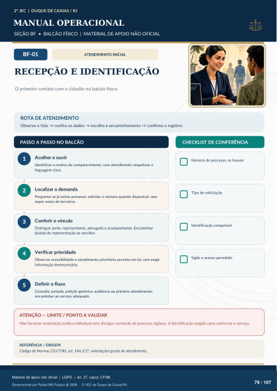

ATENDIMENTO INICIAL
RECEPÇÃO E IDENTIFICAÇÃO
O primeiro contato com o cidadão no balcão físico
ROTA DE ATENDIMENTO
Observe o fato → confira os dados → escolha o encaminhamento → confirme o registro.
PASSO A PASSO NO BALCÃO
CHECKLIST DE CONFERÊNCIA
Acolher e ouvir
Identificar o motivo do comparecimento, com atendimento respeitoso e linguagem clara.
Localizar a demanda
Perguntar se já existe processo; solicitar o número quando disponível, sem expor autos de terceiros.
Conferir o vínculo
Distinguir parte, representante, advogado e acompanhante. Encaminhar dúvida de representação ao servidor.
Verificar prioridade
Observar acessibilidade e atendimento prioritário previsto em lei, sem exigir informação desnecessária.
Definir o fluxo
Consulta, juntada, petição genérica, audiência ou primeiro atendimento: encaminhar ao serviço adequado. Número do processo, se houver Tipo de solicitação Identificação compatível Sigilo e acesso permitido
ATENÇÃO — LIMITE / PONTO A VALIDAR
Não fornecer orientação jurídica individual nem divulgar conteúdo de processo sigiloso. A identificação exigida varia conforme o serviço.
REFERÊNCIA / ORIGEM
Código de Normas CGJ/TJRJ, art. 144, § 2º; orientações gerais de atendimento.
Ver também o infográfico original (página 79)
